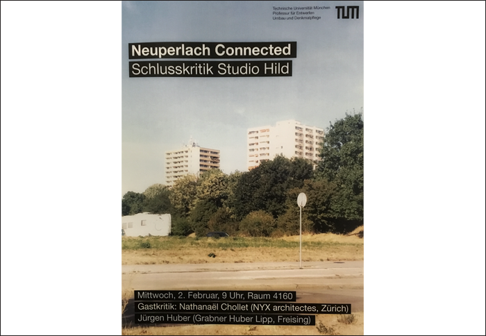

03.02.2016 CRITIQUE DE FIN DE SEMESTRE STUDIO HILL TU MUENCHEN
Nathanaël Chollet est invité en tant qu’expert pour la présentation des travaux de semestre de l’atelier Hild à la Technische Universität de Munich.
Nathanaël Chollet est invité en tant qu’expert pour la présentation des travaux de semestre de l’atelier Hild à la Technische Universität de Munich.